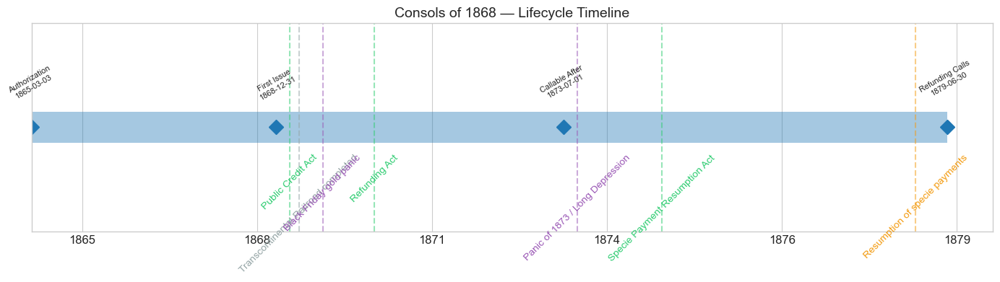
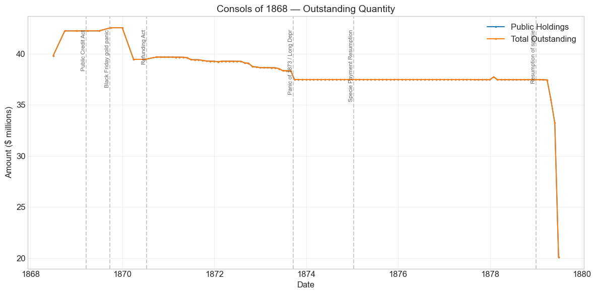
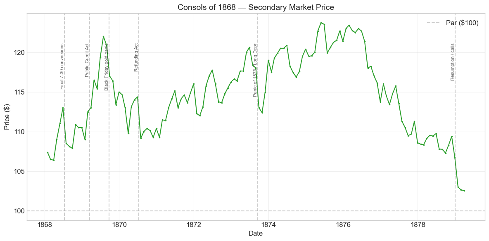
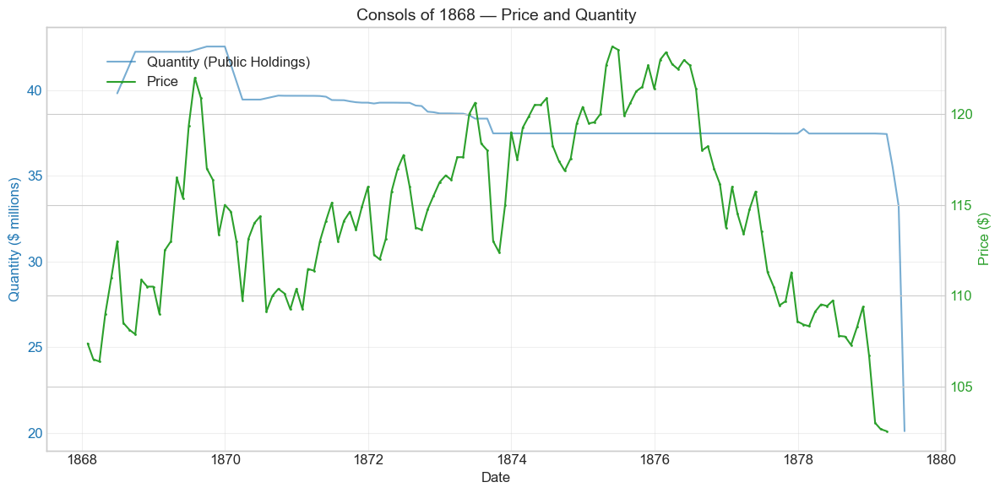
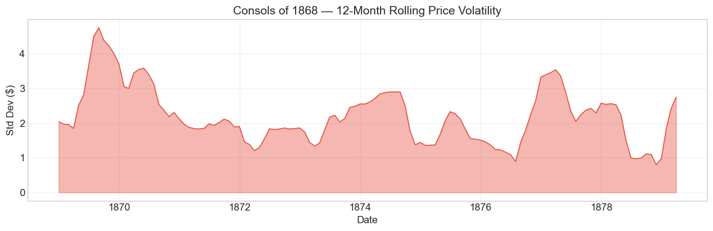

Bond Biography: Consols of 1868#
The Last Tranche: Completing the Funding of the Civil War Debt#
Enhanced from the Hall-Payne-Sargent US Federal Bond Database (2,857 issues, 1776–1960)
Bond ID (L1): 20116 Category: Interest Bearing > Marketable > Long Term Bond Coupon: 6% semi-annual, payable in coin Term: 5-year call / 20-year maturity (“five-twenty”) Authorization: Act of March 3, 1865
In 1861 the Treasury could scarcely borrow at all. Seven years later, the last of the war’s floating debt was folded into long-term bonds — and the market barely noticed. That quiet is the achievement this bond commemorates.
import pandas as pd
import numpy as np
import matplotlib.pyplot as plt
import matplotlib.patches as mpatches
import datetime
import warnings
warnings.filterwarnings('ignore')
plt.style.use('seaborn-v0_8-whitegrid')
plt.rcParams.update({'figure.figsize': (12, 6), 'font.size': 12,
'axes.titlesize': 14, 'axes.labelsize': 12})
# Load the bond database
store = pd.HDFStore('../data/BondDF.h5', mode='r')
BondList = store['BondList']
BondQuant = store['BondQuant']
BondPrice = store['BondPrice']
store.close()
BondQuant_T = BondQuant.transpose()
BondPrice_T = BondPrice.transpose()
bond_id = 20116
print(f'Loaded data for: Consols of 1868 (ID: 20116)')
/Users/thomassargent/anaconda3/lib/python3.9/site-packages/pandas/core/arrays/masked.py:60: UserWarning: Pandas requires version '1.3.6' or newer of 'bottleneck' (version '1.3.5' currently installed).
from pandas.core import (
Loaded data for: Consols of 1868 (ID: 20116)
Overview#
The Consols of 1868 was authorized under the Act of March 3, 1865. It was first issued on December 31, 1868 with a coupon rate of 6.0%. The bond was active during the Black Friday gold panic and the Panic of 1873 / Long Depression. During its lifetime on the secondary market, the bond’s average price was $114.57, ranging from $102.54 to $123.72 (based on 135 monthly observations from 1868-01-31 to 1879-03-31). Peak outstanding reached $42.54 million on September 30, 1869.
The Closing Entry in the War’s Ledger#
The Consols of 1868 were the third and final series of the consolidated six per cent “five-twenty” bonds issued under the great loan act of March 3, 1865 — the last act of Civil War borrowing authority. That act had authorized the Treasury to issue bonds and Treasury notes to fund the war’s enormous floating debt, and its principal offspring were the Seven-Thirty Treasury notes of 1864–1865: roughly $830 million of three-year notes, sold to the public in the second of Jay Cooke’s mass-marketing campaigns, and convertible at maturity into 6% five-twenty bonds. The Seven-Thirties matured in three waves — August 1867, June 1868, and July 1868 — and each wave of conversions produced a distinct consolidated bond: the Consols of 1865, the Consols of 1867, and finally the Consols of 1868.
By the time the third wave arrived, most holders who wished to convert had already done so. The Consols of 1868 were consequently by far the smallest of the three series — the database records a peak of $42.5 million outstanding, an order of magnitude below the 1867 series. But their modest size is precisely their historical significance. When the last Seven-Thirty notes were funded into these bonds in mid-1868, the conversion of the Union’s floating war debt into long-term funded debt was complete. A Treasury that in 1861 had been forced to pay ruinous rates for short-term accommodation now had its entire war debt consolidated into orderly, coupon-bearing, coin-paying bonds. The gross federal debt had peaked at roughly $2.76 billion in August 1865; three years later it was fully funded and already beginning to shrink. The Consols of 1868 are the closing entry in that seven-year ledger — and, as we shall see, the opening entry in the next one: the great refunding of the sixes into cheaper debt during the 1870s.
Key figures in this story are familiar from the other Civil War chapters in this book: Treasury Secretary Hugh McCulloch (1865–1869), who managed the conversion of the Seven-Thirties and pressed for debt contraction; George S. Boutwell (1869–1873), who used budget surpluses to buy bonds back; and John Sherman (1877–1881), who called in the six per cents and completed the refunding. The Consols of 1868 passed through all three regimes.
Historical Context#
The following major events occurred during this bond’s lifetime:
Date |
Event |
Category |
|---|---|---|
1869-03-18 |
Public Credit Act |
Legislation |
1869-05-10 |
Transcontinental Railroad completed |
Other |
1869-09-24 |
Black Friday gold panic |
Crisis |
1870-07-14 |
Refunding Act |
Legislation |
1873-09-18 to 1879-03-01 |
Panic of 1873 / Long Depression |
Crisis |
1875-01-14 |
Specie Payment Resumption Act |
Legislation |
1879-01-01 |
Resumption of specie payments |
Monetary |
Reading the 1870s Through a Six Per Cent Bond#
Like all the coin bonds of this era, the Consols of 1868 were quoted in greenbacks, while their coupons were paid in gold coin. Their currency price therefore embedded two things at once: the market’s valuation of a gold-coupon bond, and the fluctuating premium of gold over paper. This dual character — treated at length in the chapter on the Five-Twenties of 1862 — must be kept in mind when interpreting every movement below.
The Public Credit Act (March 18, 1869). One of President Grant’s first official acts resolved the long-running “gold vs. greenbacks” redemption controversy: government bonds would be paid “in coin or its equivalent.” For holders of the Consols of 1868, whose principal-redemption terms shared the ambiguity of the whole five-twenty family, this was an unambiguous gift. The database shows the price rising from about $109 in January 1869 to over $116 by mid-1869 — an appreciation consistent with the removal of the risk that principal might be repaid in depreciated paper.
Black Friday (September 24, 1869). The Gould-Fisk attempt to corner the gold market briefly destabilized the relationship between gold and government securities. The Consols of 1868 fell about 3.2% in September 1869 — a visible but contained shock, milder than the disruption in the gold room itself, and prices recovered within a few months.
The Panic of 1873 and the Long Depression. The failure of Jay Cooke & Company in September 1873 — the very house that had marketed the Seven-Thirties from which these bonds descended — triggered a stock-market crash and a wave of bank suspensions. The Consols of 1868 dropped roughly 4.2% in September 1873 as holders liquidated for cash. But the deeper effect of the depression ran the other way: with commercial demand for capital collapsing, interest rates fell, and safe government sixes became more, not less, valuable. The bond’s price recovered quickly and reached its all-time peak of $123.72 in May 1875 — in the depths of the depression. A federal six per cent was one of the few places idle capital could earn a safe return.
The approach to resumption (1875–1879). From its 1875 peak the price drifted steadily downward — not because U.S. credit was weakening, but for the opposite reason. The bonds had become callable at par after July 1, 1873, and the Treasury’s refunding machinery (under the Refunding Act of July 14, 1870) was working through the six per cent block, replacing it with 5s, 4½s, and finally the 4s of 1907. As the greenback appreciated toward gold parity ahead of resumption (January 1, 1879), and as calls of the sixes drew nearer, the premium on a callable 6% bond was inexorably compressed toward par. The last observations in the database, $102.54 in March 1879, show a bond priced for imminent redemption.
# Bond Lifecycle Timeline
fig, ax = plt.subplots(figsize=(14, 4))
# Key dates
dates = [('Authorization', '1865-03-03'), ('First Issue', '1868-12-31'),
('Callable After', '1873-07-01'), ('Refunding Calls', '1879-06-30')]
events = [('Public Credit Act', '1869-03-18', 'legislation'),
('Transcontinental Railroad completed', '1869-05-10', 'other'),
('Black Friday gold panic', '1869-09-24', 'crisis'),
('Refunding Act', '1870-07-14', 'legislation'),
('Panic of 1873 / Long Depression', '1873-09-18', 'crisis'),
('Specie Payment Resumption Act', '1875-01-14', 'legislation'),
('Resumption of specie payments', '1879-01-01', 'monetary')]
import matplotlib.dates as mdates
from datetime import datetime
# Plot bond lifetime bar
d0 = datetime.strptime(dates[0][1], '%Y-%m-%d')
d1 = datetime.strptime(dates[-1][1], '%Y-%m-%d')
ax.barh(0, (d1 - d0).days, left=mdates.date2num(d0), height=0.3,
color='#1f77b4', alpha=0.4, label='Bond Lifetime')
# Mark key dates
for label, date_str in dates:
d = datetime.strptime(date_str, '%Y-%m-%d')
ax.plot(mdates.date2num(d), 0, 'D', color='#1f77b4', markersize=10)
ax.annotate(f'{label}\n{date_str}', (mdates.date2num(d), 0.25),
ha='center', va='bottom', fontsize=8, rotation=30)
# Mark historical events
colors = {'war': '#e74c3c', 'crisis': '#9b59b6', 'legislation': '#2ecc71', 'other': '#95a5a6', 'monetary': '#f39c12'}
for name, date_str, cat in events:
d = datetime.strptime(date_str, '%Y-%m-%d')
ax.axvline(mdates.date2num(d), color=colors.get(cat, 'gray'), alpha=0.5, linestyle='--')
ax.annotate(name, (mdates.date2num(d), -0.25), ha='center', va='top',
fontsize=10, rotation=45, color=colors.get(cat, 'gray'))
ax.set_yticks([])
ax.xaxis.set_major_formatter(mdates.DateFormatter('%Y'))
ax.set_title('Consols of 1868 — Lifecycle Timeline')
ax.set_ylim(-1, 1)
plt.tight_layout()
plt.show()

Bond Features#
Feature |
Detail |
|---|---|
Name |
Consols of 1868 |
Authorizing Act |
March 3, 1865 |
Authorization Date |
March 3, 1865 |
First Issue Date |
December 31, 1868 |
Term |
5 or 20 yrs (redeemable after July 1, 1873; payable July 1, 1888) |
Coupon Rate |
6.0% |
Payment Frequency |
Semi-annual, January and July |
Callable |
Yes (at par, after five years) |
Payable in Coin |
Yes (coupons in gold coin) |
Price Sold |
1.0045 (slight premium; issued mainly in exchange for maturing 7-30 notes) |
Peak Outstanding |
$42.54 million (September 30, 1869) |
Note that the terms mirror the rest of the five-twenty family: the “5 or 20” structure gave the Treasury a call option after five years against a twenty-year maturity. For the Consols of 1868 that call window opened on July 1, 1873 — with consequences for the price path that dominate the second half of this chapter.
# Display full bond features from database
row = BondList.loc[20116]
display_cols = [
"Treasury's Name Of Issue", 'Authorizing Act', 'Term Of Loan',
'First Issue Date', 'First Redemption Date', 'Final Redemption Date',
'Coupon Rate', 'Coupons Per Year', 'Callable', 'Coin',
'Authorized Amount', 'Price Sold'
]
print('Bond Features from Database:')
print('=' * 55)
for col in display_cols:
if col in row.index:
print(f' {col:<30} {row[col]}')
Bond Features from Database:
=======================================================
Treasury's Name Of Issue Consols of 1868
Authorizing Act March 3, 1865
Term Of Loan 5 or 20 yrs
First Issue Date 1868-12-31 00:00:00
First Redemption Date NaT
Final Redemption Date NaT
Coupon Rate 6.0
Coupons Per Year 2.0
Callable 1.0
Coin 2.0
Authorized Amount nan
Price Sold 1.0045
Bond Quantity Over Time#
The bond’s outstanding quantity peaked at $42.54 million on September 30, 1869. Data spans from 1868-06-30 to 1879-06-30 (115 monthly observations).
# Bond quantity over time
fig, ax = plt.subplots(figsize=(12, 6))
for stype in ['Public Holdings', 'Total Outstanding']:
try:
s = BondQuant_T.loc[(20116, stype)]
s = s[s.notna()]
if len(s) > 0:
ax.plot(s.index, s.values / 1e6, marker='.', markersize=3, linewidth=1.5, label=stype)
except KeyError:
pass
ax.set_title('Consols of 1868 — Outstanding Quantity')
ax.set_xlabel('Date')
ax.set_ylabel('Amount ($ millions)')
ax.legend()
ax.grid(True, alpha=0.3)
events = {'1869-03-18': 'Public Credit Act', '1869-09-24': 'Black Friday gold panic',
'1870-07-14': 'Refunding Act', '1873-09-18': 'Panic of 1873 / Long Depr',
'1875-01-14': 'Specie Payment Resumption', '1879-01-01': 'Resumption of specie'}
for date_str, label in events.items():
d = pd.Timestamp(date_str)
ax.axvline(d, color='gray', alpha=0.4, linestyle='--')
ax.text(d, ax.get_ylim()[1]*0.97, label, rotation=90, va='top', ha='right', fontsize=8, alpha=0.7)
plt.tight_layout()
plt.show()

Quantity Analysis#
The quantity series tells the story of a bond that was born whole and died by decree.
Issuance (1868–1869). Unlike the Five-Twenties of 1862, which were sold over years in a marketing campaign, the Consols of 1868 came into existence almost entirely through exchange: holders of the Seven-Thirty notes maturing in June and July 1868 surrendered their notes and received consols. The database’s first observation, June 1868, already shows $39.8 million outstanding, rising to $42.2 million by September 1868 as the final July conversions were booked, and topping out at $42.5 million in September 1869. There was no gradual ramp because there was no sale — the funding operation arrived essentially complete. (The database’s “first issue date” of December 31, 1868 reflects Treasury accounting; secondary-market quotations and the conversions themselves begin earlier in 1868.)
The plateau and the early nibbles (1870–1878). Outstanding quantity dipped from $42.5 million to about $39.4 million in early 1870 and settled near $37.5 million for most of the decade. This modest attrition is consistent with the debt-reduction program of Secretary Boutwell, who from 1869 used recurring budget surpluses to purchase bonds in the open market for the sinking fund — the whole six per cent family shrank at the edges during these years. But the series was too small to be a priority target, and for eight years it sat nearly flat: a stable, coupon-clipping remnant of the war debt.
The wind-down (1879). The decisive change comes at the very end of the series. Outstanding quantity fell from $37.4 million in March 1879 to $35.5 million in April, $33.2 million in May, and $20.1 million by June 30, 1879 — the final observation, a decline of nearly half in a single quarter. This is the refunding of the sixes in action: Secretary Sherman’s sales of the 4% Consols of 1907 in 1878–1879 raised the funds to call the outstanding six per cents at par, and the Consols of 1868, callable since 1873, went into the pipeline with the rest of the block. The database series ends with the wind-down underway; the refunding of the Civil War six per cents was completed in the course of 1879, and the remaining consols were called and redeemed or exchanged as part of that operation.
Secondary Market Prices#
Overall Statistics (1868-01-31 to 1879-03-31): Mean $114.57, Range $102.54–$123.72, Std Dev $4.98, 135 observations.
By Period:
Period |
Mean |
Std |
Min |
Max |
Obs |
|---|---|---|---|---|---|
Start to Issue (1868-01 to 1868-12) |
$109.14 |
$2.04 |
$106.38 |
$113.00 |
12 |
Issue to End (1868-12 to 1879-03) |
$115.06 |
$4.86 |
$102.54 |
$123.72 |
124 |
Three features of the price history deserve emphasis. First, the bond never traded below par: its entire market life was spent at a premium of 2 to 24 percent, a remarkable contrast with the war years, when the Five-Twenties of 1862 had dipped to 94 in greenbacks even as the currency itself was depreciated. Second, the ascent from about $107 in early 1868 to the low $120s by 1872 tracks the twin engines of postwar appreciation: the Public Credit Act’s gold guarantee and the steady improvement of federal credit. Third, the long slide after May 1875 is not a credit story at all — it is the arithmetic of a callable bond converging to its call price as redemption approached.
# Annotated price chart
fig, ax = plt.subplots(figsize=(12, 6))
s = BondPrice_T.loc[(20116, 'Average')]
s = pd.to_numeric(s, errors='coerce').dropna()
if len(s) > 0:
ax.plot(s.index, s.values, marker='.', markersize=3, linewidth=1.5, color='#2ca02c')
ax.axhline(100, color='black', alpha=0.2, linestyle='--', label='Par ($100)')
ax.set_title('Consols of 1868 — Secondary Market Price')
ax.set_xlabel('Date')
ax.set_ylabel('Price ($)')
ax.legend()
ax.grid(True, alpha=0.3)
events = {'1868-07-15': 'Final 7-30 conversions', '1869-03-18': 'Public Credit Act',
'1869-09-24': 'Black Friday gold panic', '1870-07-14': 'Refunding Act',
'1873-09-18': 'Panic of 1873 / Long Depr', '1879-01-01': 'Resumption / calls'}
for date_str, label in events.items():
d = pd.Timestamp(date_str)
ax.axvline(d, color='gray', alpha=0.4, linestyle='--')
ax.text(d, ax.get_ylim()[1]*0.97, label, rotation=90, va='top', ha='right', fontsize=8, alpha=0.7)
plt.tight_layout()
plt.show()

# Price and Quantity — dual-axis chart
fig, ax1 = plt.subplots(figsize=(12, 6))
# Quantity (left axis)
for stype in ['Public Holdings', 'Total Outstanding']:
try:
q = BondQuant_T.loc[(20116, stype)]
q = q[q.notna()]
if len(q) > 0:
ax1.plot(q.index, q.values / 1e6, color='#1f77b4', alpha=0.6, label=f'Quantity ({stype})')
break
except KeyError:
pass
ax1.set_xlabel('Date')
ax1.set_ylabel('Quantity ($ millions)', color='#1f77b4')
ax1.tick_params(axis='y', labelcolor='#1f77b4')
# Price (right axis)
ax2 = ax1.twinx()
p = BondPrice_T.loc[(20116, 'Average')]
p = pd.to_numeric(p, errors='coerce').dropna()
if len(p) > 0:
ax2.plot(p.index, p.values, color='#2ca02c', marker='.', markersize=2, label='Price')
ax2.set_ylabel('Price ($)', color='#2ca02c')
ax2.tick_params(axis='y', labelcolor='#2ca02c')
ax1.set_title('Consols of 1868 — Price and Quantity')
ax1.grid(True, alpha=0.3)
fig.legend(loc='upper left', bbox_to_anchor=(0.1, 0.9))
plt.tight_layout()
plt.show()

Detected Price/Quantity Events#
The following significant movements were auto-detected:
Date |
Type |
Change |
Nearest Historical Event |
|---|---|---|---|
1879-06 |
quantity_decrease |
-39.5% |
Refunding calls (auto-matcher’s nearest label was “Panic of 1873 / Long Depression”) |
The auto-detector’s association of the June 1879 quantity drop with the Long Depression is a coincidence of dates, not a cause. The correct explanation is the refunding of the sixes: by early 1879 Secretary Sherman’s sales of the 4% funded loan of 1907 had succeeded — helped by the return of confidence after resumption of specie payments on January 1, 1879 — and the Treasury used the proceeds to call in the outstanding 6% five-twenties at par. The Consols of 1868, callable since July 1873, were swept up in this operation; the -39.5% drop in a single quarter is the sound of the call letters going out.
Several smaller price movements in the monthly data are also worth reading causally:
Date |
Change |
Interpretation |
|---|---|---|
1868-07 |
-4.0% |
The final Seven-Thirty conversions enlarged the floating supply of the new consols just as they were absorbed by the market; some month-to-month noise in early quotations of a new issue is also likely. |
1869-02 to 1869-06 |
roughly +3% in several months |
Anticipation and passage of the Public Credit Act (March 18, 1869): the gold-redemption guarantee repriced the whole coin-bond family upward. |
1869-09 |
-3.2% |
Black Friday (September 24, 1869): the Gould-Fisk gold corner briefly disordered the gold-greenback relationship on which coin-bond quotations rested. |
1870-07 |
-4.6% |
Passage of the Refunding Act (July 14, 1870) put the eventual replacement of the sixes on the statute book; the outbreak of the Franco-Prussian War in the same month unsettled international markets. With two plausible causes coinciding, we do not press either. |
1873-09 |
-4.2% |
Panic of 1873: liquidation for cash following the failure of Jay Cooke & Co., reversed within months (+3.5% in December 1873). |
1879-01 |
-3.5% |
Convergence to par as resumption arrived and refunding calls became imminent; a called 6% bond is worth par plus accrued interest, no more. |
Price Volatility#
Maximum drawdown: -17.1% (from the peak of $123.72 on May 31, 1875 to the final observation of $102.54 on March 31, 1879)
Average monthly return: -0.022%
The drawdown statistic needs careful interpretation: this was not a loss inflicted by markets doubting the government, but the planned amortization of a premium on a callable bond approaching redemption. An investor who bought at the 1875 peak and held to the call did lose part of the premium — the price of having enjoyed a 6% gold coupon in a world of falling interest rates. The chart below shows the 12-month rolling standard deviation of prices, indicating periods of high and low price stability. Volatility was highest around the 1868–1870 transition (conversion, Public Credit Act, Black Friday) and again during the 1878–1879 endgame; the mid-1870s plateau was notably calm.
# Rolling volatility (12-month window)
p = BondPrice_T.loc[(20116, 'Average')]
p = pd.to_numeric(p, errors='coerce').dropna()
if len(p) >= 12:
rolling_std = p.rolling(window=12).std().dropna()
fig, ax = plt.subplots(figsize=(12, 4))
ax.fill_between(rolling_std.index, rolling_std.values, alpha=0.4, color='#e74c3c')
ax.plot(rolling_std.index, rolling_std.values, color='#e74c3c', linewidth=1)
ax.set_title('Consols of 1868 — 12-Month Rolling Price Volatility')
ax.set_xlabel('Date')
ax.set_ylabel('Std Dev ($)')
ax.grid(True, alpha=0.3)
plt.tight_layout()
plt.show()
else:
print('Insufficient data for rolling volatility (need >= 12 observations)')

Issuance, Distribution, and Redemption#
The bond was originally recorded as sold at 1.0045 (per $100 face value) — but this figure should be read in light of how the issue actually came into being.
A conversion, not a subscription. The Consols of 1868 were not marketed to the public the way the Five-Twenties of 1862 or the Seven-Thirties had been. There was no Jay Cooke campaign, no army of salesmen, no newspaper blitz. The bonds were issued overwhelmingly in exchange for maturing Seven-Thirty Treasury notes — the June and July 1868 maturities — under the conversion privilege written into the notes themselves. The holders were therefore, in effect, self-selected from the great mass of Seven-Thirty subscribers: the national banks that held government bonds against their note circulation, together with the individual savers whom Cooke’s wartime campaigns had turned into government creditors. Any Seven-Thirty holders who preferred cash were paid off; by 1868 the Treasury could redeem for cash or refund at its convenience — itself a mark of how far federal credit had recovered.
Distribution. Like the rest of the five-twenty family, the consols were issued in both coupon and registered form in the standard range of denominations, and they traded actively on the New York market alongside their sibling series — the financial press quoted the “sixes of 1868” (often as “5-20s of ‘68”) as a matter of routine. National banks were a natural constituency, since federal bonds served as backing for national bank notes under the National Banking Acts.
Redemption. The call window opened on July 1, 1873. For six years the Treasury left the small series largely alone, apart from modest sinking-fund purchases, while the refunding machinery worked through the larger blocks of sixes. The endgame came with Sherman’s refunding drive of 1877–1879: the 4½s of 1891 and then the 4s of 1907 were sold, and the proceeds used to call the six per cents at par. The database’s quantity series captures the beginning of the end — from $37.4 million in March 1879 to $20.1 million in June 1879, where the series terminates — and the refunding of the Civil War sixes was completed in the course of 1879. The 6% consol block that had cost the Treasury roughly $6 on every $100 each year was replaced by debt costing $4 to $4.50 — a saving made possible precisely because the government had honored the gold promise embedded in bonds like this one.
Implications and Legacy#
Taking Stock: 1861 to 1868#
The Consols of 1868 invite a retrospective that no other bond in the Civil War family quite does, because they were the last piece of the war debt to be funded. Consider the arc. In the winter of 1860–61, the Treasury was so discredited that it paid double-digit rates for small loans (see the chapter on the Loan of February 1861). In 1862 it suspended specie payments, printed greenbacks, and gambled on a half-billion-dollar bond issue sold door-to-door (the Five-Twenties of 1862). Through 1864–65 it leaned on $830 million of three-year Seven-Thirty notes — high-quality floating debt, but floating debt nonetheless, all of it maturing within three years of the peace. Had the government failed to fund those notes, it would have faced a refinancing cliff of historic proportions.
Instead, between 1867 and mid-1868, the Seven-Thirties were rolled smoothly into the three consol series, of which this bond is the final installment. By the summer of 1868, seven years after Sumter, the entire war debt was funded into long-term, coin-paying bonds — and the funding was completed not at distressed prices but at a premium, this series being recorded as sold at 100.45. Few belligerents in history have consolidated a war debt of comparable relative size so quickly. The achievement belongs jointly to the wartime loan machinery, to McCulloch’s management of the conversions, and to the holders themselves — the broad public constituency for the debt that the war loans had created.
The Bridge to the Refunding Era#
The Consols of 1868 also mark a hinge. The moment the floating debt was funded, the policy question changed from “can the debt be funded?” to “how cheaply can it be carried?” The Public Credit Act of 1869 answered the prior question of what the bonds would be paid in; the Refunding Act of 1870 then created the instruments — the 5s of 1881, 4½s of 1891, and 4s of 1907 — that would replace the sixes. The whole 6% consol block, this series included, thus entered the refunding pipeline almost as soon as it was formed. When the calls came in 1879, they came not as a repudiation but as a reward: the government exercised an option it had honestly written into the contract, and it could do so only because resumption and the gold guarantee had driven its borrowing costs down to 4%.
What This Bond Reveals#
For students of sovereign credit, the quiet decade of the Consols of 1868 is as instructive as the loud years of the war loans. A bond that never traded below par, through Black Friday, the Panic of 1873, and a six-year depression, is evidence of how completely the market had come to believe in federal credit by the 1870s. The 17% “drawdown” at the end of its life was not doubt but arithmetic — the compression of a premium on a callable bond whose call had become certain. And the -39.5% quantity collapse in the final quarter of the data is the signature of the most successful debt-management operation of the nineteenth century: the refunding of the sixes, which by 1879 had converted the emergency finance of 1861–1865 into the cheap, credible, gold-standard debt of a great power.
A Small Bond’s Large Epitaph#
The Consols of 1868 raised no new money, won no battles, and at $42.5 million amounted to less than 2% of the war debt. Their significance is punctuational: they are the period at the end of the sentence that began with the desperate borrowing of 1861. When the last Seven-Thirty note was exchanged for one of these consols in 1868, the financial demobilization of the Civil War was complete — and when the last of them was called in 1879, with the dollar again convertible into gold, the monetary demobilization was complete as well.
References#
Primary Sources#
Bayley, R. A. (1881). The National Loans of the United States, From July 4, 1776 to June 30, 1880. Washington: Government Printing Office. (The standard descriptive record of the Act of March 3, 1865 loans, the Seven-Thirty conversions, and the consol series of 1865, 1867, and 1868.)
U.S. Treasury Department. Annual Report of the Secretary of the Treasury on the State of the Finances, 1865–1880. Washington: Government Printing Office. (The reports for 1867–1869 cover the Seven-Thirty conversions; those for 1877–1879 cover the refunding of the sixes.)
Public Credit Act, March 18, 1869; Refunding Act, July 14, 1870 (as amended January 20, 1871); Specie Payment Resumption Act, January 14, 1875.
Scholarly Works#
Payne, J., Szoke, B., Hall, G. & Sargent, T. (2025). “Costs of Financing US Federal Debt Under a Gold Standard: 1791-1933.” Quarterly Journal of Economics.
Mitchell, W. C. (1903). A History of the Greenbacks. Chicago: University of Chicago Press.
Unger, I. (1964). The Greenback Era: A Social and Political History of American Finance, 1865–1879. Princeton: Princeton University Press.
Friedman, M. & Schwartz, A. J. (1963). A Monetary History of the United States, 1867–1960. Princeton: Princeton University Press.
General Histories#
Dewey, D. R. (1918). Financial History of the United States. New York: Longmans, Green and Co.
Studenski, P. & Krooss, H. E. (1952). Financial History of the United States. New York: McGraw-Hill.
Companion Chapters in This Volume#
Loan of February 1861 (ID 20096); Five-Twenties of 1862 (ID 20101); Ten-Forties of 1864 (ID 20108); Consols of 1865 (ID 20114); Consols of 1867 (ID 20115); Funded Loan of 1907, the “4s of 1907” (ID 20121).
Enhanced Bond Biography generated from the Hall-Payne-Sargent Bond Database. Narrative enrichment draws on Bayley (1881), the Treasury Annual Reports, Dewey (1918), Mitchell (1903), and Unger (1964).